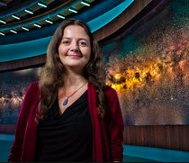

Biography
Tabetha Suzanne Boyajian is an American astronomerand astrophysicist on faculty at Louisiana State University. She was a post-doctoral fellow 2012 to 2016 at Yale University, working with Debra Fischer. Boyajian is active in the astronomical fields of stellar interferometry, stellar spectroscopy, exoplanet research, and high angular resolution astronomy, all particularly at optical and infrared wavelengths. She was the lead author of the September 2015 paper "Where's the Flux?", which investigated the highly unusual light curve of KIC 8462852;the star is colloquially known as Tabby's Star in her honor.
Tabetha S.Boyajian grows up in Atlanta, GA, and went to college in South Carolina at the College of Charleston where she earned a BS degree in Physics. After graduation, Boyajian found herself back in Georgia for grad school at Georgia State University where she got a PhD in Astronomy. Fresh out of graduate school, Boyajian was awarded the prestigious Hubble Fellowship, a grant that allowed her research to be continued at Georgia State University for an additional three years.